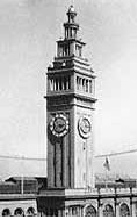
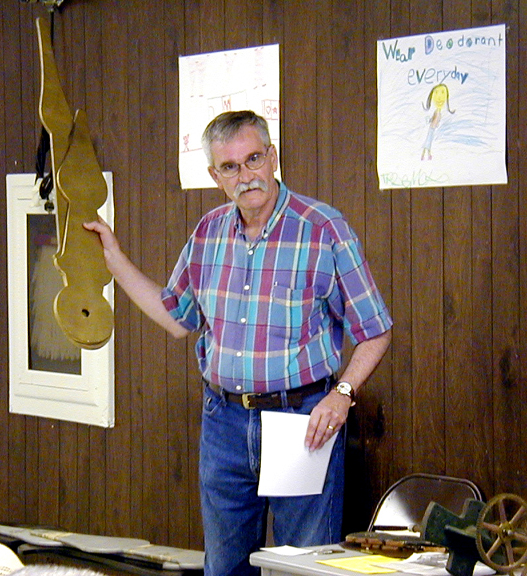
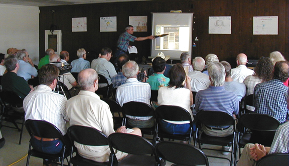

The San Francisco Historical Clock Tower and Related Items
This is an archived report. Meeting places, times and people have changed since it was written. See Meetings for current details.
Our September 14th Meeting was held as usual at the San Leandro Boy’s and Girl’s Club. Even with a Oakland Raider’s game scheduled in near-by Oakland, and a San Francisco 49ers game on TV, we estimate that the MART had over 200 members buying and selling.

After a short Chapter Business meeting our speaker was Dorian Clair, a San Francisco clock repair shop owner, who had recently restored San Francisco’s Embarcadero Ferry Building’s Tower Clock. Dorian was recommended to the City and County of San Francisco by the Building Contractor who had restored the old Southern Pacific Building and now was the Contractor on the Ferry Building. Dorian had done the clock work on the SP Building.
The Ferry Building is a landmark in San Francisco. The original Ferry Building was built of wood in 1875, with a reported Seth Thomas Clock installed. The various Railroads had ferries, but used different time standards, the ferry building clock was used by the ferry captains and passengers as a time standard.

A new ferry building was built in 1898 on 5000 concrete pilings over the Bay, with a 650 foot tower, and a new Howard #4 Special tower clock. The new clock was on the 9th floor of the 17 story tower with 4-23 foot dials. The 1906 earthquake damaged the original dial faces, and they were replaced with sheet metal and glass faces. The clock weights and pendulum rod were encased in wooden chutes so the earthquake damage to the clock was minor. At some time period after the new dials were installed, lamp sockets were mounted at the 1 minute intervals on all 4 dials, but never wired.

Peak ferry use was in 1913 with a reported 23 ferries on the bay, making 170 trips a day to and from the terminal and carrying many thousands of passengers daily. By 1939 when both bridges opened, ferry traffic fell off and the building fell into disrepair. There was even talk of tearing it down and building a high rise building.
In 1940, the clock was converted to a slave clock using a Standard Electric Time Company Master. This arrangement lasted until 1974 when a synchronous electric drive was installed. Both these drives by-passed the movement
With a new Century, the City decided to refurbish the building and get the clock started again. Enter Dorian. The construction foreman remarked that anything not needed on the clock would be junked, and recomended that the clock be motorized and made to work. The 900 pound weight was tied off, and this time the movement was motorized. With the movement intact, it can be converted to weight drive in about 20 minutes, and was shown weight driven on a local TV news show. The movement has a Dennison double three legged gravity escapement and a 2 seconds pendulum.
The carillon associated with the clock is a computer driven CD of Big Ben. A 1200 watt amplifier drives 11 large horn type speakers mounted above the clock dial faces. At times the carillon and clock are not together but are soon synchronized manually, by the local maintenance crew.
The clock and dial work were completed in early 2002, but the building dedication and restarting of the clock was on June 17,2003.